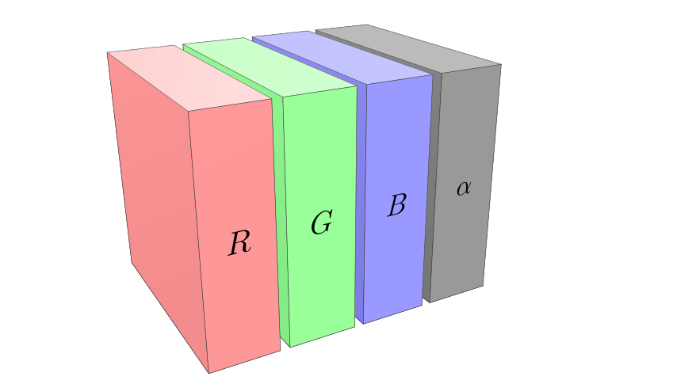

Foundation for machine learning and scientific computing in Elixir
Nx Example Code
defmodule Example do
import Nx.Defn
defn my_fun(x, y) do
Nx.add(Nx.cos(x), Nx.sin(y))
end
end
# Example calls:
Example.my_fun(0.0, 1.57)
Example.my_fun(Nx.tensor([0.0, 1.57]), Nx.tensor([1.0, 2.0]))
Example.my_fun(Nx.tensor([0.0, 1.57]), 10)
How Nx works
Nx provides functions to create and manipulate tensors
These functions will internally generate a computation graph, a nested Nx.Defn.Expr struct
When you call the function, it will execute the Defn expression
Configurable compilers will be able to target different devices
How Nx works
Nx.Defn.Expr allows us to compile the Nx code at Elixir runtime
The code can then be deployed to:
GPU
CPU
Browser, via WASM
iOS, via LiveView Native
How computers represent images

How computers represent images
Each color in the cube we saw is called a channel
In RGBA one pixel has 4 channels: R, G, B, and A
There are other formats with more or less channels (e.g. grayscale)
Convolution
Convolution applies a small matrix (kernel) to each region of the
input, sliding the kernel over the input
Each output value is a weighted sum of neighboring pixels
Used for edge detection, blurring, sharpening, etc.
Convolution
Kernel filters
A kernel filter is a small matrix used to transform images